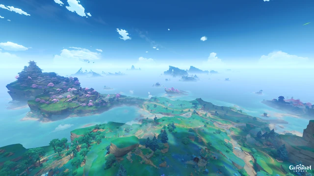

Inazuma · Geography & Locations
Inazuma: Islands and Eternity
Inazuma is an Electro archipelago of six principal island areas, with distinct histories from Narukami to Tsurumi and the subterranean region of Enkanomiya. The Archon Quest ends the Vision Hunt and Sakoku decrees, while a Version 7.2 cutscene frames Ei's answer to the Heavenly Principles as Eternity.

An Electro nation of six island areas
Inazuma is one of Teyvat's seven nations and the realm of the Electro Archon, the Raiden Shogun. HoYoverse introduced six principal surface areas across Versions 2.0–2.2: Narukami Island, Kannazuka, Yashiori Island, Watatsumi Island, Seirai Island, and Tsurumi Island. Kannazuka is the named area containing Tatarasuna; it is not a seventh island.
The region also includes Enkanomiya, a subterranean land beneath Watatsumi. It has a distinct history and archive, so the six surface areas are a useful geographic outline rather than a complete map of Inazuma's inhabited past.
The Shogunate and the Tri-Commission
The Raiden Shogun's civil administration is carried out through three commissions. The Yashiro Commission handles cultural and ceremonial matters; the Tenryou Commission oversees military affairs; and the Kanjou Commission manages external relations and movement through Ritou. Their authority operates in the Shogun's name, but the Archon Quest shows that individual officials can mislead the ruler or put private interests ahead of that duty.
The Grand Narukami Shrine and Sangonomiya Shrine serve different religious and civic communities. Their leaders—Yae Miko and Sangonomiya Kokomi—also shape the political story: Miko helps expose the Fatui's scheme, while Kokomi leads Watatsumi's resistance.
The decrees and the Watatsumi resistance
The Sakoku Decree restricted travel into Inazuma, with foreign visitors processed at Ritou. The Vision Hunt Decree ordered the seizure of Visions and their placement in the Statue of the Omnipresent God. Watatsumi's army resisted the Shogunate, while the Fatui used the conflict to distribute Delusions and deepen the fighting.
The Traveler and Yae Miko uncover the Tenryou Commission's dealings with the Fatui and confront Ei in the Plane of Euthymia. Ei acknowledges that the Vision Hunt had her approval, then changes course after seeing how the pursuit of unchanging eternity has harmed the nation. The Archon Quest ends the Vision Hunt and Sakoku decrees; it does not claim that every consequence of the conflict immediately disappears.
Makoto, Ei, and the puppet Shogun
The Archon Quest reveals that the public title of Raiden Shogun concealed twin sisters. Makoto, also called Baal, ruled openly; Ei, also called Beelzebul, served as her warrior counterpart. After Makoto died during the Cataclysm, Ei took on the role and created a puppet to govern Inazuma while she withdrew into the Plane of Euthymia.
The puppet and Ei are connected but not interchangeable. The puppet follows the instructions encoded for the Shogunate, while Ei can be reached within her inner world. Their duel takes place in the Plane of Euthymia—not in Makoto's consciousness—and becomes the turning point in Ei's understanding of change.
Six islands, six different records
Narukami holds Inazuma City, Tenshukaku, the Grand Narukami Shrine, and the Sacred Sakura. Kannazuka contains Tatarasuna and the Mikage Furnace. Yashiori is marked by Orobashi's enormous remains. Watatsumi is the home of the Sangonomiya and the resistance, with its own religious history tied to Orobashi.
Seirai and Tsurumi have separate Thunderbird-related histories. Seirai's storm and Balethunder are resolved through Seirai Stormchasers; Tsurumi's fog and Ruu's story unfold in Through the Mists. These hazards frame those quests and are cleared in the completed overworld, so they should not be described as permanent weather across present-day Inazuma.
Enkanomiya beneath Watatsumi
Enkanomiya lies below Watatsumi and preserves records from a much older civilization. The Byakuyakoku Collection and Before Sun and Moon describe its inhabitants' life underground, their return to the surface, and their encounter with Orobashi. These sources connect Inazuma's island geography to a history that predates the current Shogunate and the Archon Quest.
The Enkanomiya texts are themselves accounts written and preserved by people with limited knowledge of the world above. Keep their records, later Watatsumi traditions, and the Archon Quest's history of Orobashi in view as distinct sources rather than treating one book as a complete, neutral timeline.
Eternity after the Archon Quest
The Inazuma story presents Ei's pursuit of eternity as an answer to repeated loss. In Reflections of Mortality, she recognizes that the nation has changed and that this does not make it cease to be Inazuma. Her post-quest position is therefore not a return to the Vision Hunt or a claim that change has ended.
A HoYoverse cutscene published on November 13, 2026, titled Thunder and Eternity, frames Ei's answer to the Heavenly Principles through Musou Isshin and her ideal of eternity. This is a current official framing of her resolve; it should be read alongside the in-game account of the decrees and the decisions that ended them.
This is an original CoreGG reading guide, not an official HoYoverse article or a reproduction of the game text. Source links below identify the records used so you can check the original context.
Sources & references
Check these sources for the original game text and reference trail.
- Genshin Impact Wiki — Inazuma
- Official Version 2.0 Update Details · initial Inazuma areas
- Official Version 2.1 Update Details · Watatsumi and Seirai
- Official Version 2.2 Update Details · Tsurumi Island
- Archon Quest transcript · Autumn Winds, Scarlet Leaves
- Archon Quest transcript · Omnipresence Over Mortals
- Story Quest transcript · Reflections of Mortality
- World Quest record · Seirai Stormchasers
- World Quest record · Through the Mists
- Official Cutscene Animation · Thunder and Eternity